우당탕탕 걸들의 홍대 맛집 탐방기
코로나도 막지 못한 우리의 만남!
집순이들의 포효
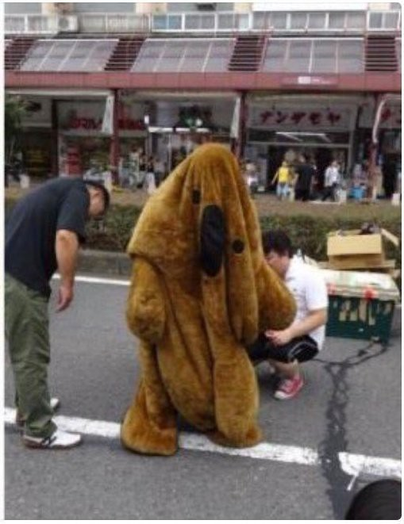
심심하다.. 미친듯이..
내가 원래 집순이이긴 하지만 강제로 칩거생활을 하려니
몸이 근질근질해서 버틸 수가 없었다.
집순이도 자발적 집순이일때 행복하다는 것을 이번 사태를 통해 깨달아버림..
하지만 나의 친구들 우당당탕 girls가 있어서 나는 외롭지 않아..
이 친구들은 같은 취미를 가지고 있어서 알게 된 사이인데,
만날때마다 우당탕탕 거리면서 놀아서 내 마음대로 ‘우당탕탕 girls’ 라고 부르고 있다.
아무튼 우리는 코로나 꺼져!!!! 를 외치며 이 시국에 당당하게 홍대에서 약속을 잡았다.
물론 말만 꺼지라고 했지 사실 코로나는 무섭기 때문에 마스크와 손소독제는 필참.
이 시국에 굳이! 많고 많은 곳 중에 홍대로 약속 장소를 정한 이유!
그건 바로 내 사랑 버터밀크 때문이다.
버터밀크?!
버터밀크는 홍대에서 가장 유명한 브런치 맛집이다.
위치는 여기! 홍익대학교 캠퍼스 주변 홍대 학원거리에 위치해있다.
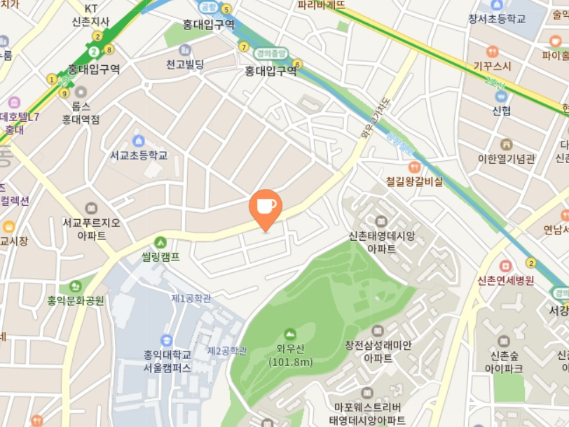
서울 마포구 와우산로 130
http://naver.me/5559l809
버터밀크를 알게 된 건.. 2019년의 어느날.
당시 나는 홍대에서 편입 학원을 다니고 있었다.
입시를 해 본 사람들은 알겠지만,
수험생이 끼니를 호화스럽게 챙겨먹는 건.. 솔직히 조금 사치다.
돈도 돈이지만, 밥 여유롭게 먹을 시간에
공부 한 번 더 하고, 그림 한 번 더 그리고 해야 하니까..
하지만.. 그건 알지만..
매번 점심마다 편의점 도시락이나 컵라면으로 떼우는 게 슬슬 신물이 나기 시작했다.
컵라면 먹기 싫어.. 배고파.. 기운없어..
그러던 어느 날,
이대로 가다간 몸과 마음이 다 상하겠다 싶어서
조금 더 제대로 끼니를 챙겨먹어야겠다고 생각하게 되었다.
정갈하게.. 정갈하게 차려진 음식이 먹고싶어...!
그렇게 결심을 한 나는
학원 주변에 있는 맛집을 검색해보게 되었고,
검색창 상단에 위치한 버터밀크를 보게 되었다.
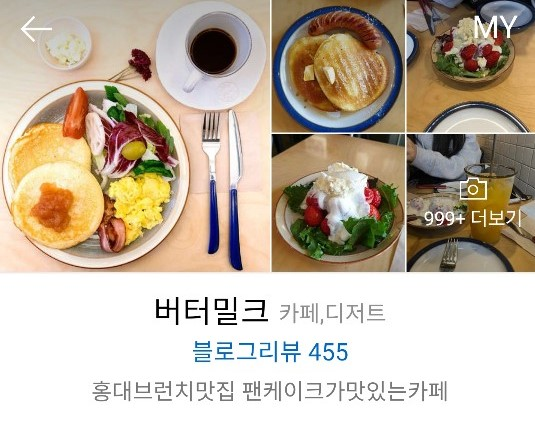
음.. 브런치? 브런치 괜찮네..
너무 배부르지 않으면서도, 야채도 있고, 단백질도 있고..
딱 점심식사로 괜찮을 것 같은 느낌이 들었다.
학원에서도 멀지 않았기 때문에 나는 홀린듯이 버터밀크로 발걸음을 향했다.
원래는 웨이팅이 길기로 유명하지만,
내가 점심을 먹는 시간대에는 항상 줄이 조금 빠져 있었다.
그래서 운 좋게도 대기 없이 들어가서 식사를 할 수 있었다.
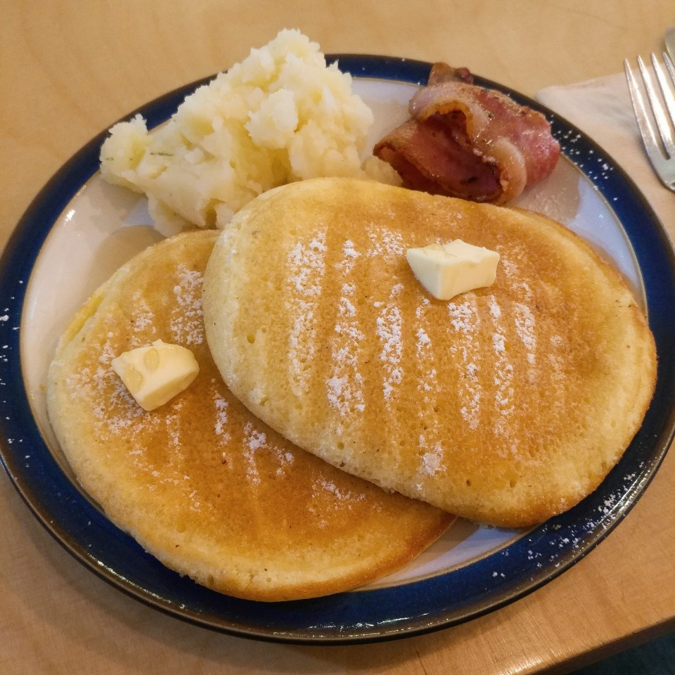
이것이 바로 나의 첫 버터밀크
사실 원래 세트메뉴가 더 합리적인데 나는 이 날 처음 가본거라
세트가 따로 있는줄 모르고 단품에 감자랑 베이컨을 추가해먹었다.
나중에 세트의 존재를 알게 된 이후로 땅을 치고 후회했음
어쨌든,
버터밀크 팬케이크를 처음 먹어본 그 순간 내가 느낀 감정은..!

미미(美味)
아니 이게 뭐람
개맛있어!!!!!!!!!!!!!!!!!!!!!
솔직히 처음에는 그냥 홍대니까 장사 잘 되는 거겠지, 하고 생각했는데
아니었다.
이건 팬케이크계의 혁명이다.
그 날 이후로 나는 버터밀크의 팬케이크 맛에 매료되어
학원을 그만두기 전까지 버터밀크를 찾게 되었다.
원래 난 한식 아니면 일식을 가장 좋아하던 사람이었는데,
버터밀크를 다녀온 이후 브런치에 푹 빠져버렸음..
그리고 친구들한테도 여기 꼭 와야된다고 호들갑 엄청 떨었다.
버터밀크 최고!
그 후로 친구들에게도 이 맛을 알려주고 싶어서 몇 번 데려갔었는데,
이상하게 친구들만 데려가면 웨이팅이 심하게 길어서 매번 허탕을 쳤다.
하지만! 이번 만남에서만큼은
웨이팅이 있어도 기필코 버터밀크에서 식사를 하자! 라고 마음먹었다.
사실, 그 이유는 이 날 만나기로 했던 친구들 중 한 명이
위에서 언급한 같이 갔다가 허탕을 쳤던 친구였는데,
그 친구가 자신은 꼭 버터밀크를 가봐야겠다고 강하게 어필했기 때문이다.
(너 한 맺혔었구나..)
아무튼, 한 맺힌(?) 친구의 외침에
마스크를 단디 쓰고 손소독제를 품에 꼭 안은 우리는
그렇게 위풍당당하게 홍대로 향했다.
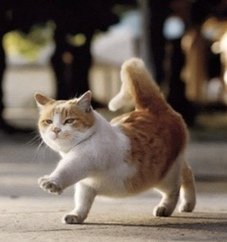
어~디~서~나~ 당!당!하게 걷기~
두근거리는 마음을 안고 홍대에 도착
입시 끝나고 약 한달만에 다시 오게 된 홍대!
(구)홍대 지박령인 나의 진두지휘에 따라 버터밀크로 가보니
역시나 이 날도 웨이팅이 있었다.
하지만 우린 오늘만큼은 웨이팅이 있어도 꼭 기다려서 먹자고 다짐했기 때문에
대기석에 앉아서 사장님이 주문을 받으러 와주실때까지 기다렸다.
신기한건, 코로나 때문인지 홍대 거리에는 평소보다 사람이 현저히 적었는데
버터밀크 앞에 있는 대기줄은 길다는 것이었다.
역시 홍대 맛집은 다르구나.
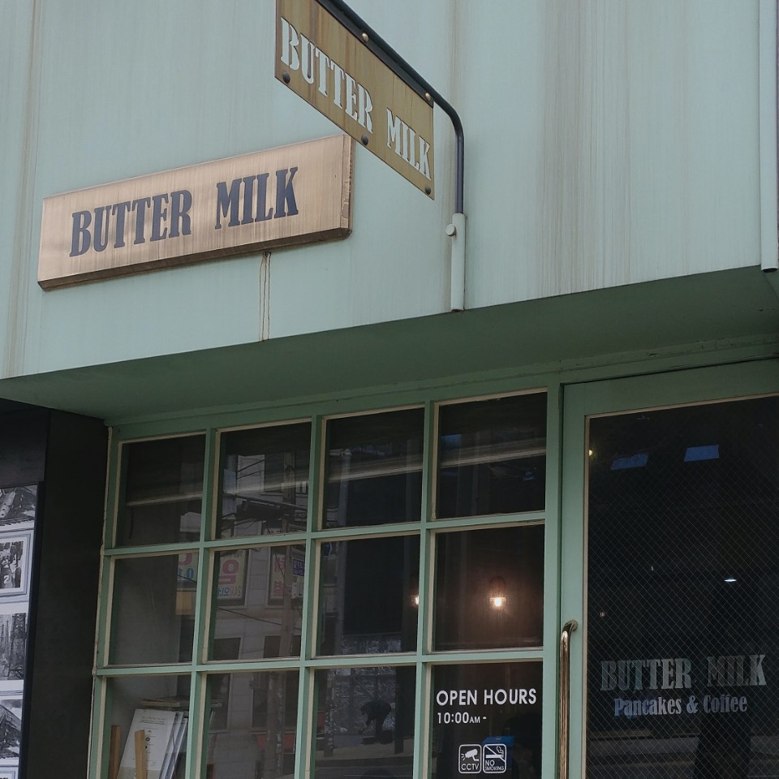
기다리면서 찍은 버터밀크 간판
금빛으로 빛나는 저 간판은 볼때마다 나를 설레게 한다.
한참을 기다린 끝에 사장님이 주문을 받으러 나와주셨다.
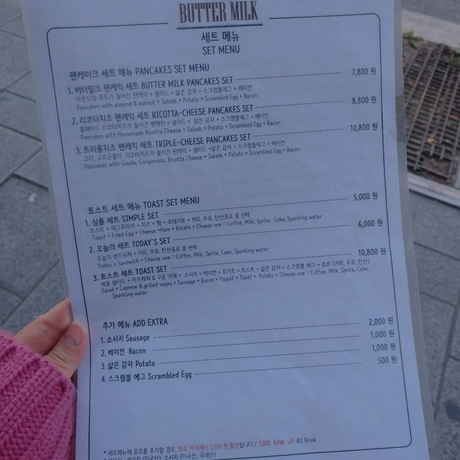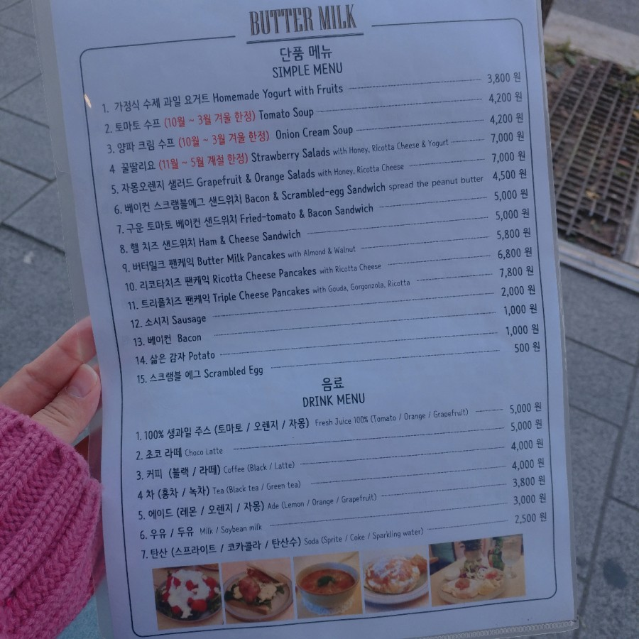
버터밀크 메뉴판 사진
버터밀크는 항상 대기줄이 길고, 음식을 조리하는 데에 시간이 많이 소요되기 때문에
대기하고 있으면 홀을 담당하는 사장님이 나오셔서 이렇게 메뉴판을 나눠주신다.
이때 메뉴판을 보고 메뉴를 고르면 사장님이 주문을 받아주시고, 미리 음식을 만들어주신다.
그래서 유난히 사람이 더 많은 날을 제외하고는
웬만하면 자리에 앉았을 때 바로 음식이 나오는 편이다.
참고로 버터밀크는 추가주문이 불가능하다.
먹고 싶은 메뉴를 미리 생각해두고 처음에 주문할 때 한번에 요청해야 한다.
버터밀크에서 제일 유명한 건 팬케이크 세트와 꿀딸리요다.
꿀딸리요는 꿀+딸기+리코타 치즈+요거트의 앞글자를 따온 이름이다.
내가 이 두가지를 강력추천해서 각자 버터밀크 팬케이크 세트에 소시지를 추가하고,
테이블 당 에이드와 꿀딸리요를 하나씩 시켰다.
샌드위치나 다른 메뉴도 맛있지만,
버터밀크는 팬케이크가 제일 유명하기 때문에 팬케이크를 추천했다.
사실 난 리코타 치즈가 들어간 리코타 치즈 팬케이크가 맛있긴 한데,
꿀딸리요에 리코타 치즈가 들어가기 때문에
이 날은 친구들에게 치즈가 안 들어간 팬케이크를 주문하는 걸 추천해주었다.
드디어 버터밀크 입성!
기다리면서 오랜만에 만난 동생들과 열심히 수다를 떨다보니
금방 우리 차례가 되었다. 야호!
이 날은 나도 약 한달만에 버터밀크에 온 거라 무척 설렜다.
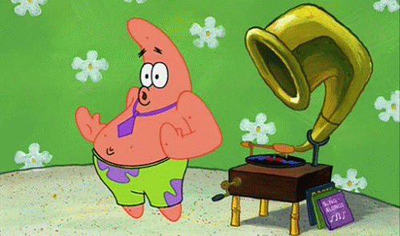
(입장하면서 내적 댄스)
참고로 버터밀크는 테이블이 매우 좁아 2명까지가 적당하다.
또, 워낙 웨이팅이 많은 곳이기 때문에
인원이 많으면 떨어진 자리에 앉을 수 밖에 없다.
일행이어도 테이블 합치는 게 불가능!
이 날 우리는 총 4명이 같이 간 것이기 때문에
두명씩 테이블을 나눠서 따로 주문을 하였다.
그런데 이 날은 운이 좋았는지 바로 옆 테이블로 자리를 잡아
네명이 같이 이야기를 나누며 먹을 수 있었다.
이런 경우 흔치 않은데…!
(개이득)
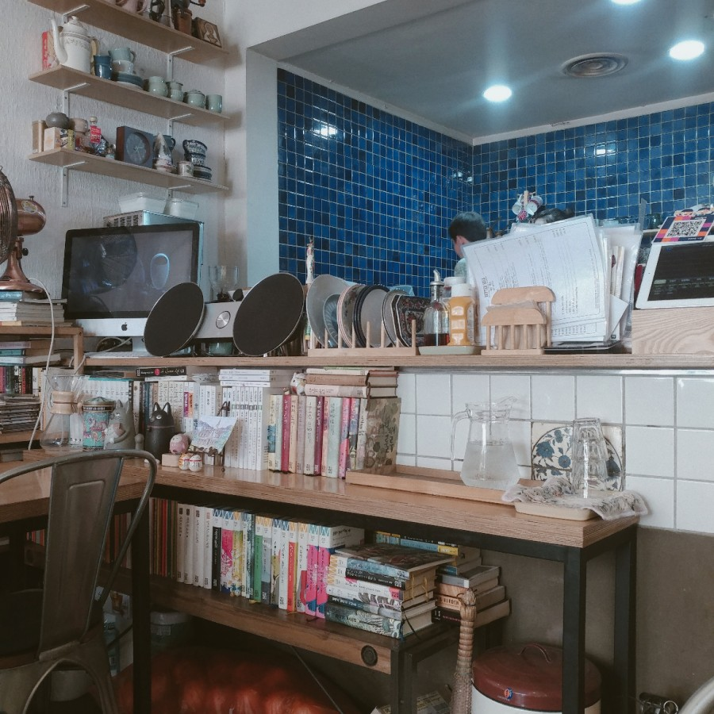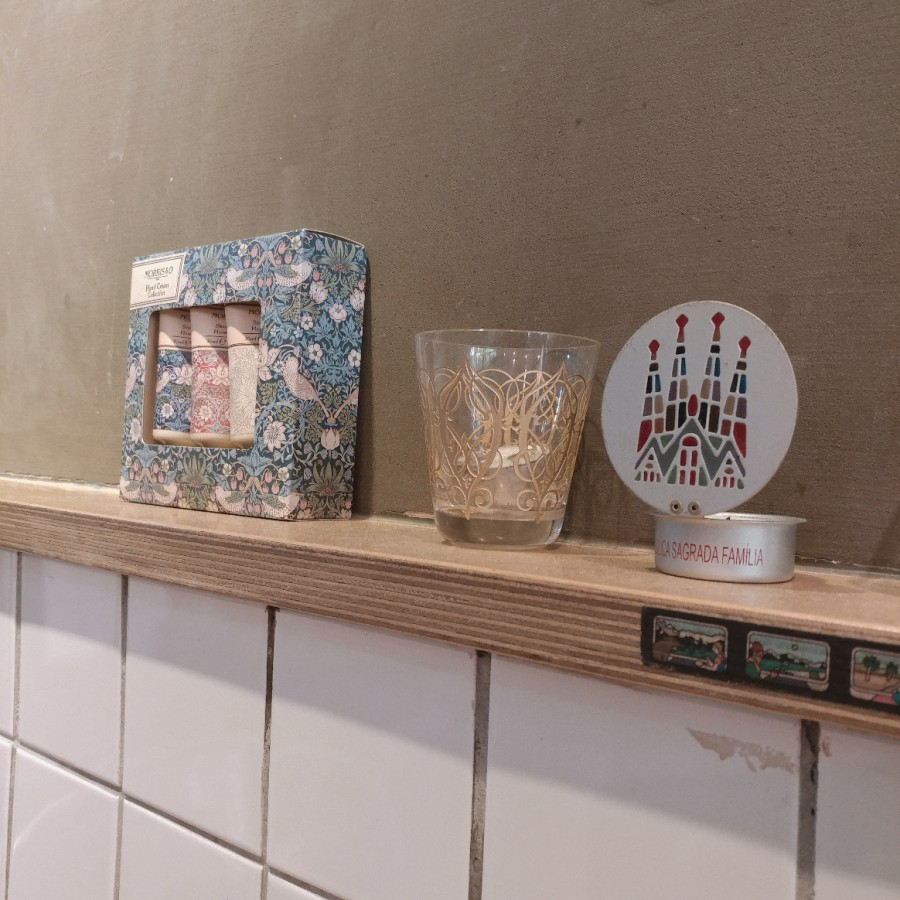
소소하게 찍어본 버터밀크 내부
사장님 인스타그램을 보면, 책이나 영화 리뷰가 가끔 올라온다.
아마도 문학에 관심이 많으신 분 같다.
그래서인지 가게 내부에도 책이 가득하고,
모니터에는 항상 매일 다른 영화가 틀어져 있다.
책 말고도 가게 내부에 액자나 아기자기한 소품들도 많아서
인테리어 둘러보는 재미가 쏠쏠하다.
(워낙 좁고, 다른 손님들에게 방해가 될 수 있기 때문에
내부 사진을 많이 찍지는 않았다.)
그 밖에도, 주방이 오픈형이라
사장님과 직원분들이 요리하는 모습도 볼 수 있다.
작지만, 생각보다 볼 거리가 많은 가게!
인고의 시간이 흐르고, 드디어 나온 음식!
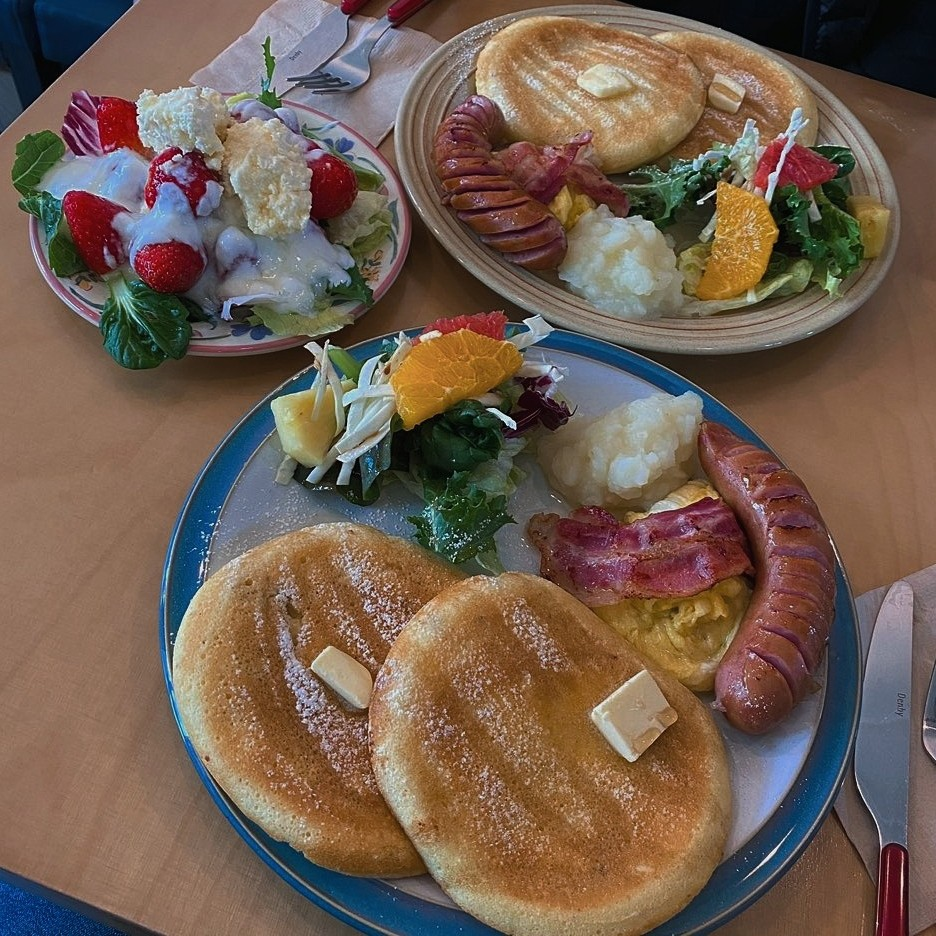
행-복
너무 예뻐.. 이 정갈함이 그리웠다.
사실 내가 너무 맛있다고 오버를 떨어놔서 친구들 입맛에도 맞을까 걱정했는데,
다행히 한 입 먹어본 친구들도 나랑 비슷한 반응이었다.
ㅋㅋㅋ 이 반응
특히 지난번에 같이 왔다가 허탕치고 돌아왔던 친구가 유독 맛있다고 하면서 잘 먹었다.
친구 왈: "아 진심 개행복해..."
내 입맛이 틀리지 않았다는 걸 증명할 수 있어서 다행이었다.
친구들이 맛있게 먹는 걸 보니 내가 다 뿌듯하고 기분이 좋았다.
역시 데려오길 잘했어!
버터밀크의 음식을 소개합니다
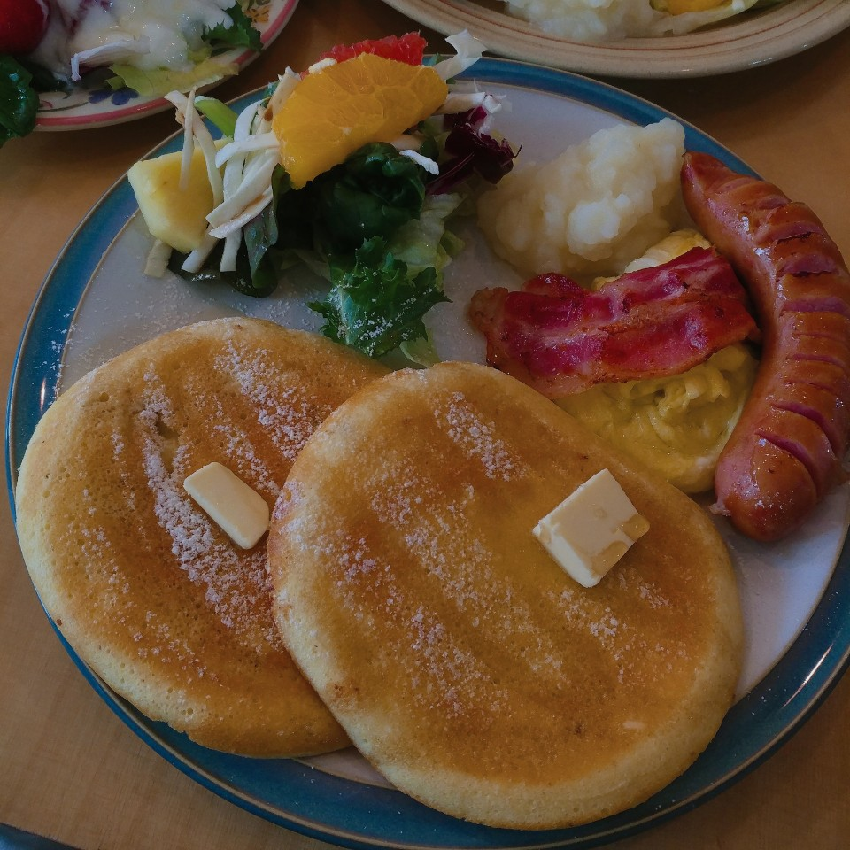
포슬포슬 팬케이크
정말 사장님한테 팬케이크 어떻게 만드는지 여쭤보고 싶은 맛이다.
포슬포슬하고 부드러운 이 맛은 집에서는 절대 만들어 먹을 수 없는 것이다.
위에 올려져있는 버터를 바르지 않아도, 버터의 풍미가 잘 느껴진다.
베이컨도 어찌나 좋은 걸 쓰시는지
적당히 바삭하고 촉촉하고 짭짤한 감칠맛이 정말 좋다.
그 외에도 매쉬드 포테이토, 스크램블 에그, 샐러드까지.. 맛이 없는 게 없는 맛집이다.
샐러드에 들어간 채소는 조금 쌉쌀한 편인데,
팬케이크가 느끼할 수도 있기 때문에 밸런스를 맞춰주려고 하신 모양이다. (난 매우 좋음)
소시지도 적당히 뽀득뽀득하고, 큼직하니 맛있음!
이 집에게 조금 아쉬운건, 차가운 상태로 나오는 삶은 감자 정도?
개인적으로 감자는 따뜻하게 먹는 게 더 맛있을 것 같다.
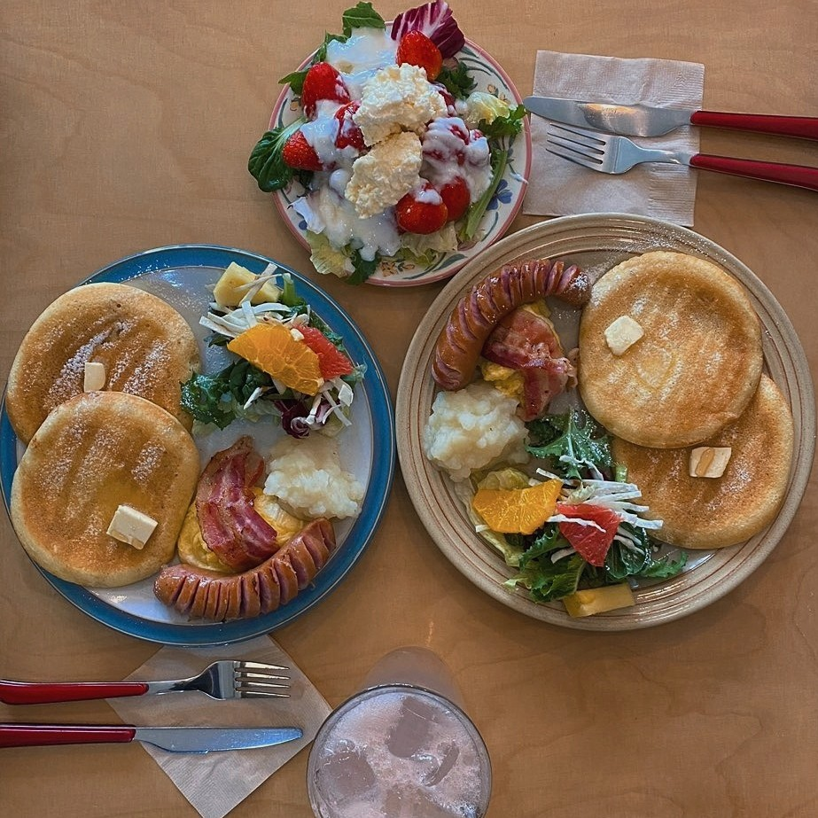
다른 각도에서 찍은 사진
플레이팅이 너무 정갈하고 예뻐서 한참동안 사진을 찍다가 먹었다.
같이 시킨 에이드는 내가 탄산을 좋아하는 편이 아니라 그냥 평범했다.
차라리 스프를 시킬 걸 하는 생각이 쪼~끔 들었지만..
그래도 언제나 맛있는 버터밀크
참고로 버터밀크는 맛도 맛이지만, 홍대 맛집 치고는 가격도 나쁘지 않다.
팬케이크 두장, 스크램블, 매쉬드 포테이토, 베이컨, 샐러드로 구성된
기본 팬케이크 세트가 7,800원으로 꽤 합리적인 가격이다.
기본 세트만 먹어도 충분히 배부름!
이 날 우리는 소시지도 추가해먹었는데, 소시지 추가는 2,000원이다.
개인적으로 버터밀크는 베이컨이 맛있어서 1,000원 내고 베이컨 추가하는 걸 추천한다.
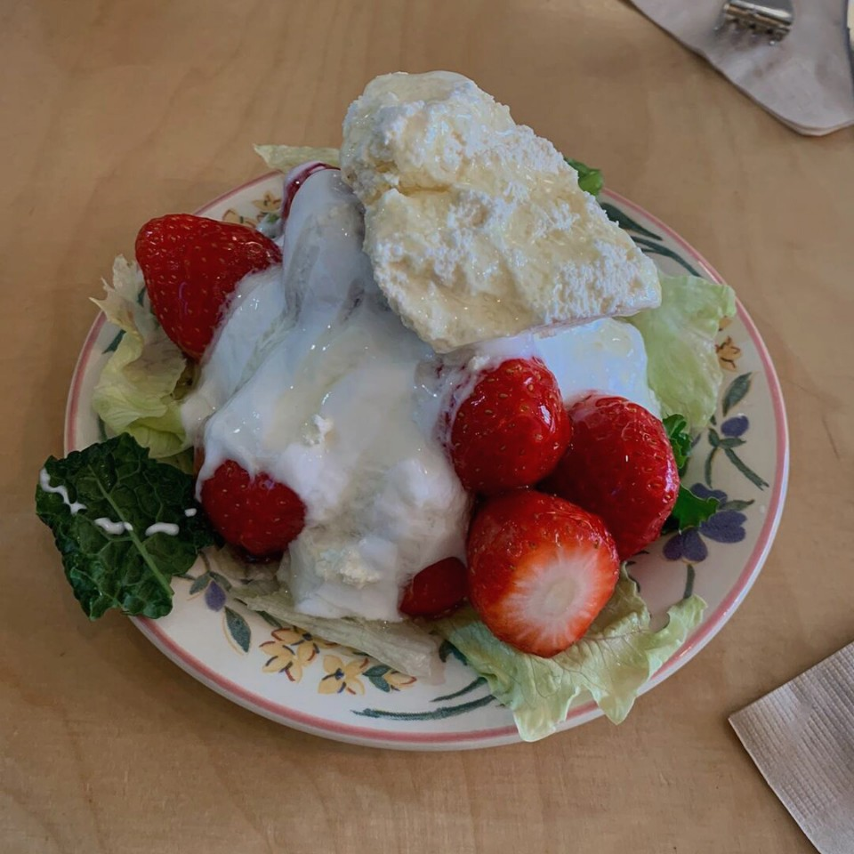
이 사진에 있는 게 바로 꿀딸리요!
꿀딸리요는 딸기가 제철인 겨울에서 봄 사이에만 나오는 시즌메뉴다.
사실 혼자서 팬케이크에 꿀딸리요까지 시켜서 먹기는 좀 부담스러워서
이렇게 친구랑 같이 와야 시켜먹을 수 있는 메뉴다.
나는 개인적으로 산미가 많이 나는 음식을 좋아하지 않는데,
버터밀크의 요거트는 산미가 적고 깔끔한 맛이라 딱 내 취향이다.
딸기도 제철 딸기를 사용하셔서 싱싱하고 달달해서 정말 상큼하고 맛있다!
여름 되면 또 생각날 것 같은 메뉴.
양이 많지는 않지만 리코타 치즈가 들어가는 것과 재료가 신선하다는 점을 생각해보면
7,000원은 꽤 괜찮은 가격이라고 생각한다.
어차피 사이드 메뉴라 보통 2~3명이 하나씩 시키니까 이 정도면 나쁘지 않은 가성비다.
전체적으로 메뉴 가격이 저렴해서
많이 먹는 편이라면 혼자 시켜도 나쁘지 않을 듯?
뭐, 어떻게 먹든 버터밀크라면 최고의 식사가 가능할 거라고 생각!
행복한 식사였다...!
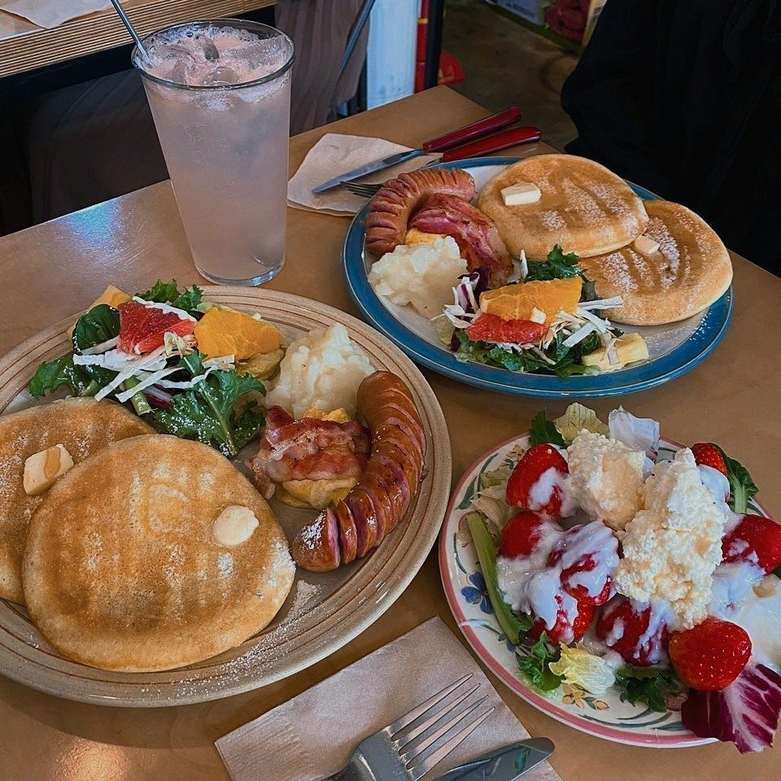
제일 잘 나온 것 같은 사진 한 컷 투척
다 먹고 계산하고 나오면서 사장님하고 짧게나마 대화를 했다.
학교 기숙사 들어가면 자주 못올거 같다고 말씀드리며 아쉬운 작별인사를 했음. 흑흑
많은 손님이 다녀가는 가게인데,
부디 앞으로도 사장님과 직원분들 건강에 별다른 이상이 없었으면 좋겠다.
오랜만에 그동안 못 만났던 친구들도 만나고, 맛있는 것도 먹어서 행복했던 날이었다.
특히 내가 좋아하는 맛집을 내가 좋아하는 친구들에게 소개시켜 줄 수 있어서 더 좋았다.
이 날 팬케이크 맛있게 다 먹고 다른 카페로 가서 한참 수다를 떨다가 헤어졌다.
오랜만에 만나도 어색하지 않고, 나이는 다 다르지만 같이 있으면 즐거운 친구들.
코로나 사태가 조금 진정이 되면, 이 친구들과 또 다른 맛집에 같이 가고 싶다.
버터밀크 탐방, 그 후
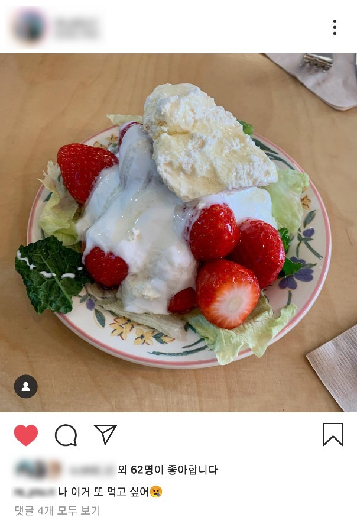
친구의 인스타
친구 왈: “언니.. 나 버터밀크 또 가고 싶어…”
이 친구도 나처럼 버터밀크에 중독되기 시작한 것 같다.. 크크
역시 데려가길 잘한 것 같음! 뿌듯뿌듯
다음에 또 맛있는 거 먹으러 가자, 얘들아!